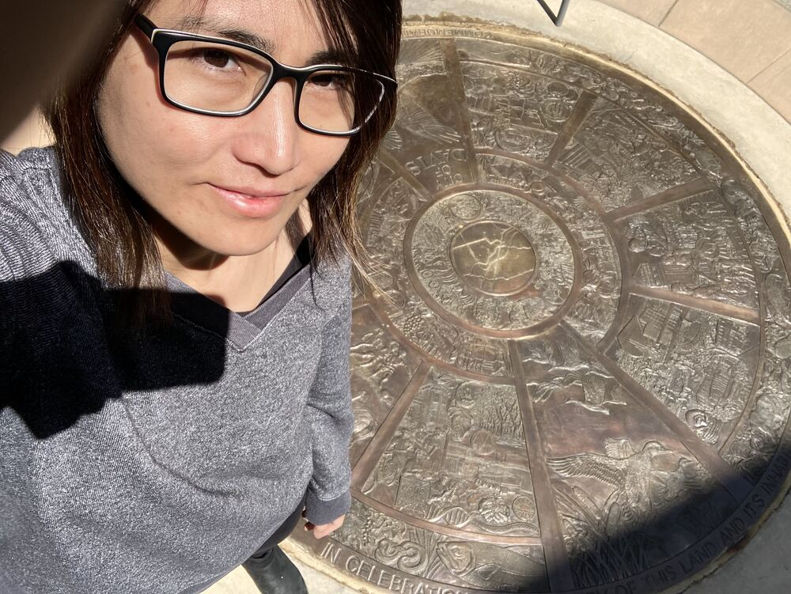

One aspect of the seal that interests me the most is the inner ring which portrays the early history of a particular area. I think it’s so clever to tell the story the way the inner ring takes the viewer on a clockwise journey through the area's history, starting with the original Patwin people, who were hunters and gatherers.
Also it was very interesting to know about the devastating impact of European diseases on the Patwin people and how the first pioneers, who were trappers, came to the region during the eras of Spanish and Mexican sovereignty. I think that this project is very helpful for people who doesn’t know about the history of Davis.
